1 -
Front wheel
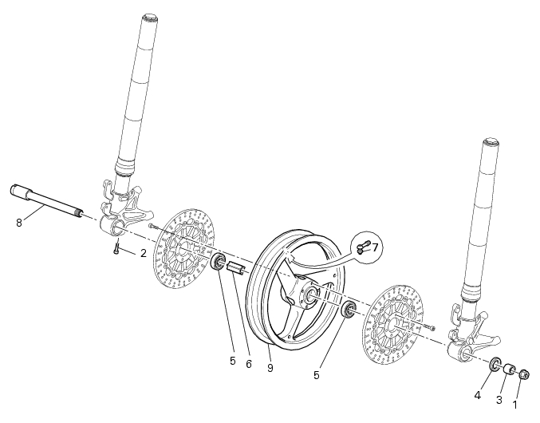
1
Nut
2
Screw
3
Spacer
4
Seal
5
Bearing
6
Inner spacer
7
Valve
8
Front wheel axle
9
Front wheel rim
Parts catalogue
Front forkS
Front and rear wheels
Important
Bold reference numbers in this section identify parts not shown in the figures alongside the text, but
which can be found in the exploded view diagram.
Removal of the front wheel
Support the bike so that the front wheel is raised from the ground.
Remove the front brake caliper (B) by unscrewing the two screws (A) securing the caliper to the fork leg; do not disconnect the
caliper from the hose.
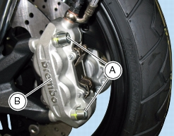
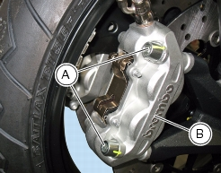
Warning
Do not operate the brake lever when the calipers are removed. This could cause fluid to leak out from the actuating pistons.
Loosen and remove the nut (1) on left side of the axle.
Loosen the axle clamp screws (2) on the ends of the fork legs.
Working from the left side, use a plastic mallet to drive the wheel axle (8) out from the opposite side.
Remove the wheel and recover the spacer (3) on the left-hand side.
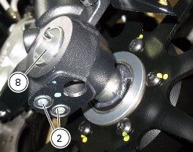
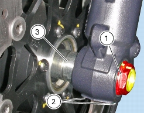
Overhauling the front wheel
Overhauling the front wheel bearings
Before checking the dimensions, check the wear on wheel bearings. Check for wear by hand after cleaning and degreasing the
bearings in their seats. Turn the inner race. Check the amount of radial and axial play. Excessive play will cause vibration and make the bike unstable; in this case the bearings must be renewed. To remove the bearings (5) from the wheel hub, proceed as follows.
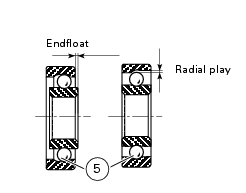
Position a drift (A) against the inner race of the bearing (5).
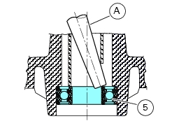
Tap the drift with a hammer to drive out the bearing. Apply the drift at different points to keep the bearing square during removal.
Important
Once removed, bearings must not be refitted. Before fitting new bearings, check that the housing is clean and free from scoring
and damage.
Grease the bearing seat and then push the new bearing into its seat.
Warning
Avoid getting grease on the braking surface of the disc during these operations as this could impair braking efficiency. Using
a tubular drift (B) which only exerts pressure on the bearing outer ring, drive the bearing fully into its seat. Ensure that spacer (6) is fitted between the two wheel bearings.
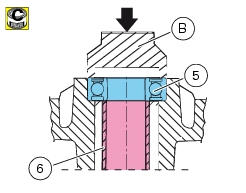
Notes
Wheels must be rebalanced after repair, maintenance and overhaul operations.
Overhauling the front wheel axle
Check the wheel axle for straightness.
Roll the axle on a reference surface and measure maximum distortion using a feeler gauge (see Sect.
C 1.1,
Front wheel
).
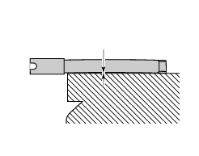
Maximum permissible distortion:
0.05
mm.
The surfaces of the axle must be free of any cracks, dents, scoring or any signs of damage, however light.
Localised polished areas are permitted.
Overhaul of the front and rear rim
After you have checked the bearings, check the rim as follows.
Visually inspect the rim for cracks, scoring and deformation; change the wheel if damaged.
Insert the axle in the wheel and mount it on two fixed reference blocks.
Using a dial gauge, measure rim runout and out-of-round relative to the wheel axle (see Sect.
C 1.1,
Front wheel
).
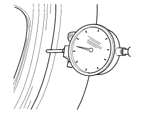
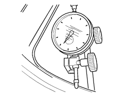
If the values measured are not within the tolerance limits, renew the wheel.
Maximum permissible rim runout
1
mm (0.04 inc.).
Maximum permissible rim runout
0.5
mm (0.02 inc.).
Refitting the front wheel
When all the necessary inspections have been completed, refit the wheel as follows.
Lubricate the shank and thread of the wheel axle (8).
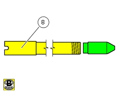
Insert the front wheel between the fork legs, installing the spacer (3) between the wheel hub and the left fork leg.
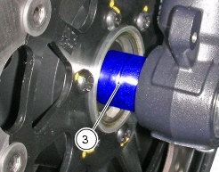
Warning
Position the front wheel, observing the arrow (G) marked on the rim showing the direction of rotation.
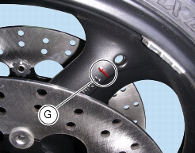
Fit service tool no.
8000.70139
on the wheel axle (8).
Drive the axle (8) fully home into the wheel hub, inserting the locating peg of the service tool in the special notches at the bottom
end of the fork.
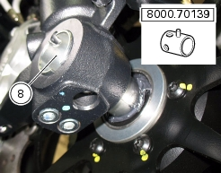
Grease the thread and the underside of the head of axle nut (1), then screw it onto the end of the wheel axle.
Tighten the nut (1) to the specified torque (Sect.
C 3,
Frame torque settings
).
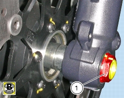
Grease the threads and undersides of the heads of screws (A).
Screw in the two screws (A) securing the brake caliper (B).
Pre-tighten the screws (A) to the specified torque (Sect.
C 3,
Frame torque settings
).
Operate the front brake lever two or three times.
Hold the lever pulled in towards the grip and tighten the screws (A) to the specified torque (Sect.
C 3,
Frame torque settings
).
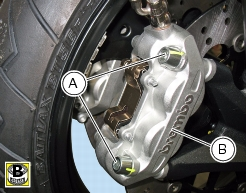
Check that the brake discs turn freely inside the calipers.
Before tightening the axle clamp screws (2), lower the bike to the ground and push up and down on the handlebars to load the
suspension so the fork legs will become properly seated onto the wheel axle.
Lubricate the screws (2).
Tighten the screws (2) to the specified torque (Sect.
C 3,
Frame torque settings
), in the sequence 1-2-1.
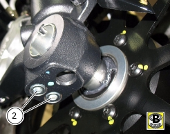